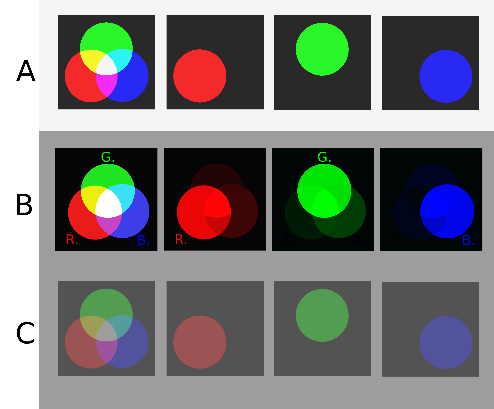

ВОСПРОИЗВОДИМОСТЬ СТРУКТУРЫ ЦВЕТОВОГО СИГНАЛА В СУБТРАКТИВНОЙ СРЕДЕ
Независимые информационные каналы в физической среде пигментов
Проблема восприятия
Изображение, созданное в излучающей RGB-среде, неизбежно изменяется при воспроизведении на физическом носителе. Существующие системы управления цветом ориентированы преимущественно на визуальное соответствие человеческому восприятию и не ставят своей целью сохранение структуры сигнала.
Реальные пигменты обладают конечной спектральной селективностью. Их спектры частично перекрываются, вызывая межканальную интерференцию (Crosstalk) и нарушая операционную независимость цветовых компонент.

Ограничения глаза
ICC-профили обеспечивают визуальную красоту, но разрушают цифровые данные.
Физическая интерференция
Пигменты смешиваются не идеально, создавая "шум" в каналах.
Решение SCI
Приведение характеристик к общим границам для детерминированного разделения.
Математическая модель
Механизм спектрального масштабирования
Спектральный ограничитель
SCI использует спектральный ограничитель — компонент с минимальным динамическим диапазоном. Все остальные пигменты нормализуются относительно его физических границ, образуя общую систему опорных уровней.
Якорь системы
Якорем служит компонент с наименьшим рабочим диапазоном. Остальные пигменты масштабируются относительно его характеристик. В результате спектральные свойства становятся согласованными.

Аппаратная синхронизация
Замыкание цикла: Экран — Фильтры — Печать
Используя комплект узкополосных RGB-фильтров в качестве физического эталона, можно согласовать спектральные свойства дисплея и печатной системы. Экран отображает изображение в границах спектральных возможностей конкретной печатной системы.
Дисплей
Излучающая среда
Фильтр
Физический эталон
Печать
Отражающая среда
Эксперименты и Применение
Воспроизводимое представление цветовой информации на физическом носителе


Spectrum QR
Многослойное цветовое кодирование данных.
QRnament
Интеграция данных в орнамент.
CV Systems
Калибровка компьютерного зрения.
Calibration
Единый базис для сенсоров.